So retro it hurts, and I don't think they were being ironic. A fabric shop where they give sewing classes, a really progressive legal practice, a ghastly place that sells every item enhanced with possum-fur (so hideous I thought they might offer live skinning options ...), a sock machine museum (!!), a Rover 2000, Hokitika's Museum which is housed in the imposing Carnegie Building (1908) and a Boogie Nights-style cinema that was offering, surprise surprise, a live relay of the ENO Traviata. It is also the setting for Eleanor Catton's Booker Prize-winning The Luminaries - wonderful.
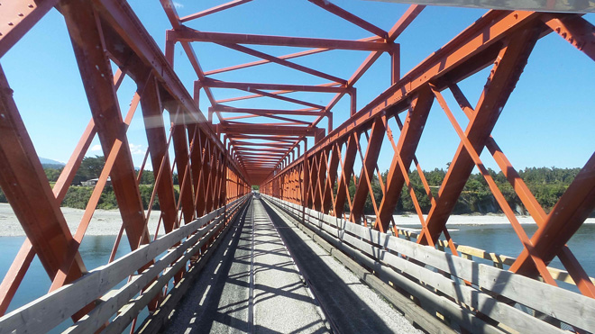
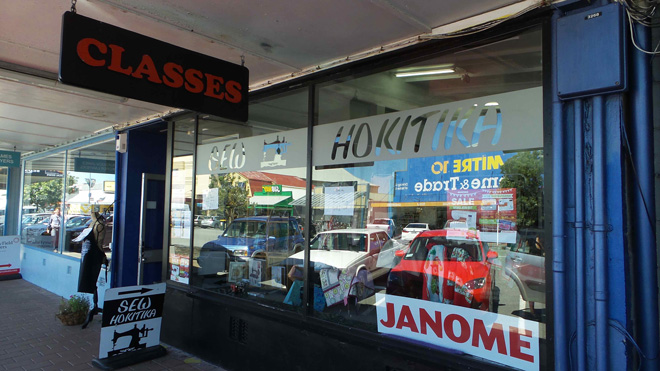
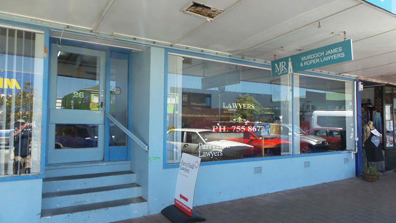
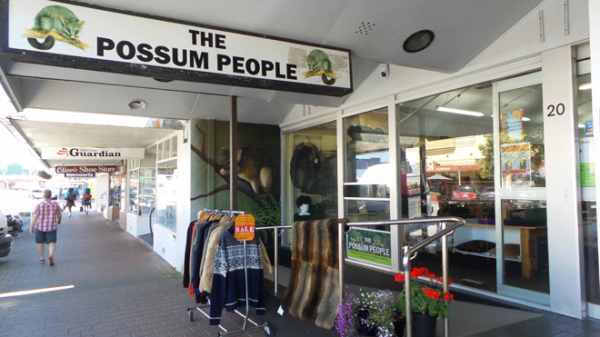
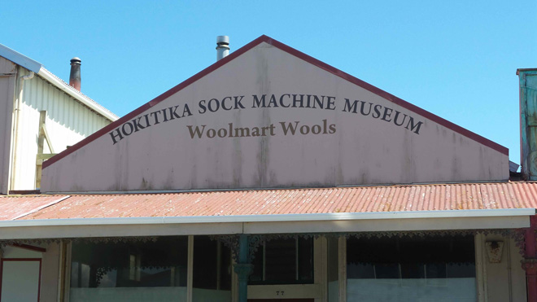
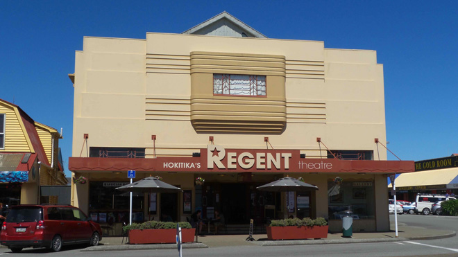
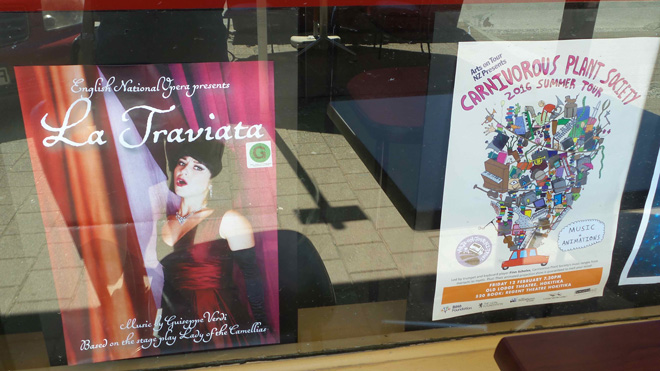
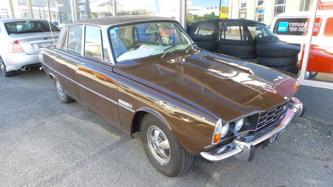
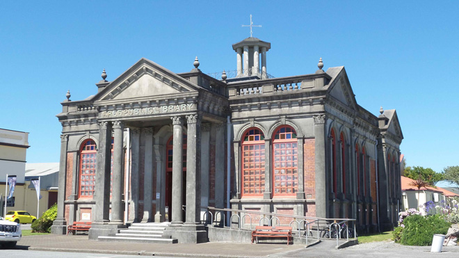
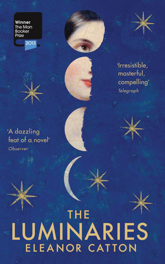
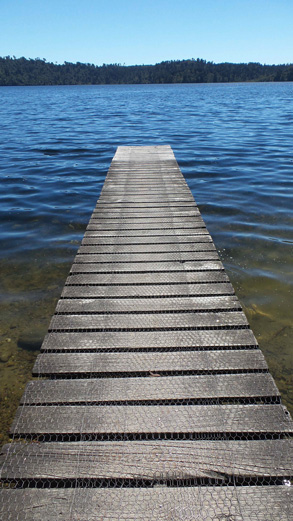
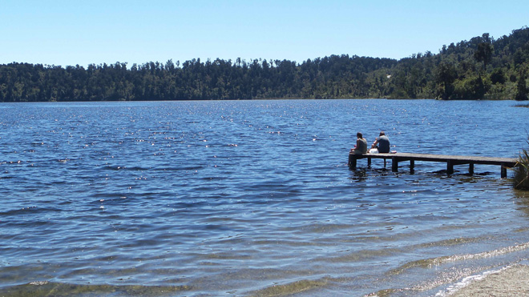
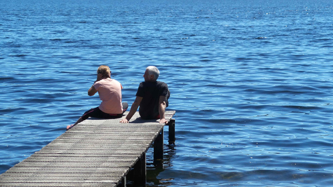
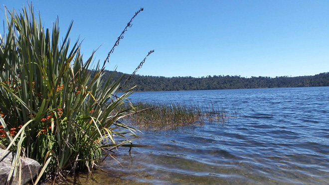
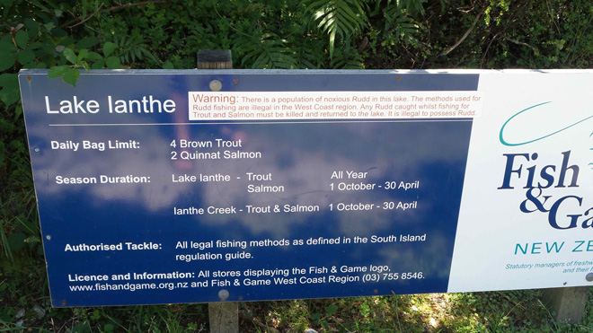
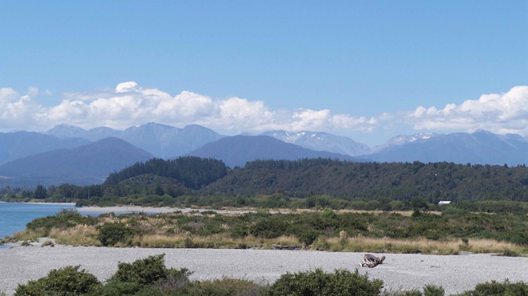
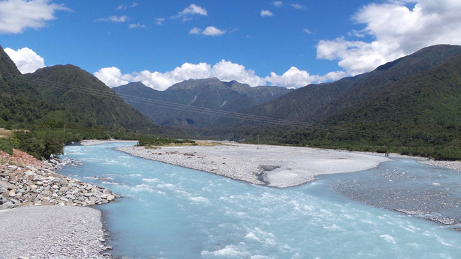
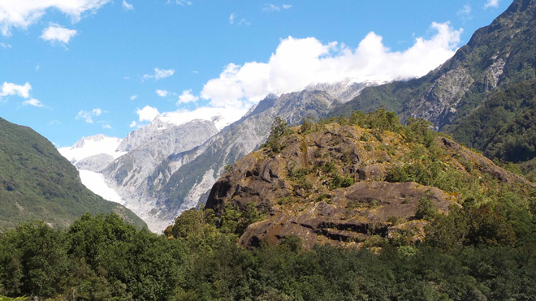